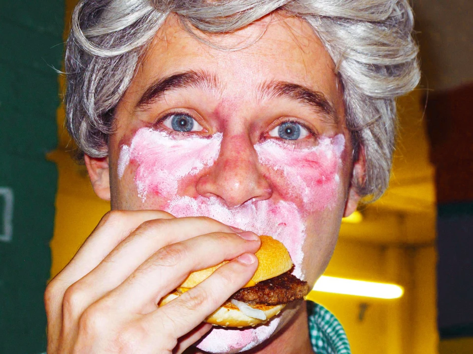

CF / An independent operation
About.
Music, images, and things I’m figuring out.

Cancelled Futures is where I bring together the things I make: electronic music, photographs, drawings, generative art, and tools for making more.
Some start with a sound, others with a mark or a bit of code. This archive gives them a place to sit alongside one another, without needing them all to fit the same mold.
More about Roger Link